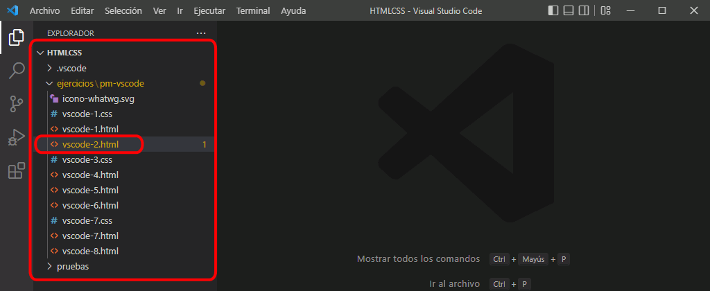

Abra en Visual Studio Code la página vscode-1.html.
Abra la página vscode-1.html en Firefox y Chrome con los atajos de teclado Ctrl+Alt+f y Ctrl+Alt+c..
Si no se abre el navegador correspondiente, revise los atajos de teclado creados en Visual Studio Code, como se explica en la lección Configuración de Visual Studio Code.
Compruebe que la dirección de la página es file:///C://Users/NombreDeUsuario/Documents/LMSGI NombreAlumno/HTML/ejericios/puesta-en-marcha/vscode-1.html, donde NombreDeUsuario es el nombre del usuario de Windows y NombreDeAlumno es su nombre.
El resultado en el navegador debe ser este:
VS Code 2 - Extensión HTMLHint
Cree en Visual Studio Code la página vscode-2.html.
Copie y pegue el siguiente código HTML en la página vscode-2.html:
<html LANG="es">
<!DOCTYPE html+css>
<head>
<meta charset="utf-8" charset="utf-8">
<link rel="stylesheet" href="">
</head>
<body>
<P id="a">Esta página web NO es una página HTML válida.
<p id='a'> 5 > 4</p>
<p><img src="a.png"></p>
</body>
</html>
Compruebe que en la barra lateral inferior el indicador de error indica la existencia de 13 avisos. Haga clic en él para ver los errores detectados.

Si no se muestran los 13 avisos, compruebe que la extensión HTMLHint está instalada y revise la configuración de la extensión HTMLHint, como se explica en la lección Configuración de Visual Studio Code.
Corrija algunos de los errores y compruebe que van desapareciendo de la lista a medida que se van corrigiendo:
VS Code 3 - CSS Lint
Cree en Visual Studio Code la página vscode-3.css.
Copie y pegue el siguiente código CSS en la página vscode-3.css:
Compruebe que en la barra lateral inferior el indicador de error indica la existencia de 7 avisos. Haga clic en él para ver los errores detectados.
Si no se muestra el aviso "Selectors should not contain IDs", revise la configuración de Visual Studio Code, como se explica en la lección Configuración de Visual Studio Code.
VS Code 4 - Extensión Close HTML/XML Tag
Abra en Visual Studio Code la página vscode-4.html.
Borre la etiqueta de cierre </p> (línea 13).
Compruebe que en la barra lateral inferior el indicador de error indica la existencia de un error. Haga clic en él para ver el error detectado. Compruebe que efectivamente señala la ausencia del cierre de la etiqueta <p>
Si no se muestra el error, compruebe que la extensión HTMLHint está instalada y revise la configuración de la extensión HTMLHint, como se explica en la lección Configuración de Visual Studio Code.
Corrija el error situando el cursor al final del párrafo y pulsando el atajo de teclado Ctrl+.. Compruebe que se añade el cierre de la etiqueta </p>. Compruebe que el indicador de error ya no muestra ningún error.
Si no se añade la etiqueta , compruebe que la extensión Close HTML/XML Tag está instalada y revise la configuración de la extensión Close HTML/XML Tag, como se explica en la lección Configuración de Visual Studio Code.
VS Code 5 - Extensiones Tag Inserter y Auto Rename Tag
Abra en Visual Studio Code la página vscode-5.html.
Compruebe que el texto de la línea 11 no está rodeado de etiquetas.
Seleccione el texto de la línea 11 (sin los espacios iniciales).
Pulse el atajo de teclado Alt+Máy+i. Compruebe que se abre un cuadro de texto en la parte superior, escriba h2 y pulse Intro.
Si la línea 11 no aparece rodeada de la etiqueta <h2>, compruebe que la extensión Tag Inserter está instalada.
Borre el nombre de la etiqueta <h2> (no borre las desigualdades < >) y corríjalo por <h1>
Si no se cambia simultáneamente la etiqueta de cierre </h1>, compruebe que la extensión Auto Rename Tag está instalada.
VS Code 6 - Extensión Image Preview
Abra en Visual Studio Code la página vscode-6.html.
Abra la página en el navegador. El resultado debe ser este (el logotipo es muy grande, pues ocupa todo el ancho de la pantalla):
Sitúe el cursor encima del nombre de la imagen y observe como se muestra una ventana que contiene una miniatura de la imagen y su tamaño.
Si no se muestra la ventana, compruebe que la extensión Image Preview está instalada.
Pulse el atajo Ctrl+Alt+e Ctrl+Alt+t y compruebe que se añaden los atributos width = 100 y height = 100.
Guarde la página en Visual Studio Code y actualice la página en el navegador. Compruebe que la imagen ya se muestra al tamaño 100px x 100px.
VS Code 7 - Extensión CSScomb
Abra en Visual Studio Code la página vscode-7.html.
Abra la página en el navegador. El resultado debe ser este:
Abra la hoja de estilo vscode-7.css.
Pulse el atajo Alt+Máy+c Alt+Máy+f y compruebe que se formatea correctamente la hoja de estilo (una propiedad por línea, etiquetas en minúsculas, un espacio de separación, etc.
Si no se formatea correctamente la hoja de estilo, compruebe que la extensión CSScomb está instalada y revise la configuración de la extensión CSScomb, como se explica en la lección Configuración de Visual Studio Code.
Guarde la hoja de estilo en Visual Studio Code y actualice la página en el navegador. Compruebe que la página se ve exactamente igual que antes.